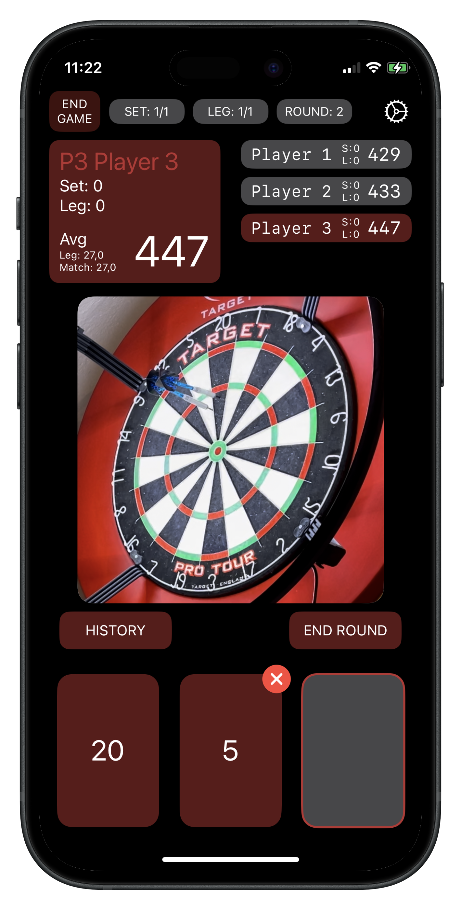

Revolution in dart scoring
Are you ready to take your dart game to the next level? Darteer automatically tracks your scores in real-time, allowing you to focus on your game. Android and iOS beta available soon.

Are you ready to take your dart game to the next level? Darteer automatically tracks your scores in real-time, allowing you to focus on your game. Android and iOS beta available soon.